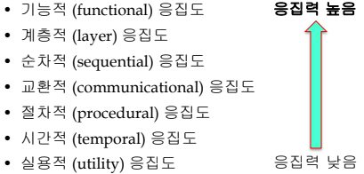

충남대학교 컴퓨터공학과 김현수 교수님의 "소프트웨어 공학" 강의를 필기한 내용입니다.
다소 잘못된 내용과 구어적 표현 이 포함되어 있을 수 있습니다.
아키텍쳐 설계
- 기능적 요구사항을 구현하기 위한 방법을 찾고 비기능적 요구사항에 명시된 제약을 준수하기 위한 설계 과정
Design Space

- 위처럼 선택 가능한 모든 설계의 대안을 모아놓은 것을 Design Space 라고 하고
- 이 중에서 경로를 하나 선택해서 설계를 하고 이것이 설계의 최종 산출물이 된다
설계를 구성하는 요소들

- Module : 프로그래밍 언어 수준에서 정의된 컴포넌트
- 위 그림에서 보이는것처럼 컴포넌트는 컴포넌트로 구성될 수 있고 시스템의 구성요소가 될 수도 있다
상향식 설계 / 하향식 설계
- 하향식 설계(Top-Down) : 시스템의 최상위부분을 설계하고 하위 컴포넌트로 점차 내려오면서 구체적으로 설계하는 방식
- 하향식 설계는 전체 시스템 구조를 잡는데 좋다는 장점이 있다
- 상향식 설계(Bottom-Up) : 컴포넌트들을 일단 다 구성한 후에 그것들을 배치하며 높은 수준의 구조를 설계하는 것
- 상향식 설계는 재사용 가능한 컴포넌트를 구성하는 것에 강점이 있다는 장점이 있다
- 보통은 이 둘을 혼용하여 각각의 장점을 모두 취한다
설계의 종류
- 아키텍처 설계 : 전체 시스템과 서브 시스템, 컴포넌트들로 분할하여 구조와 관계를 잡는 것
- 클래스 설계 : 각각 컴포넌트들에 대해 설계
- 사용자 인터페이스 설계 : UI
- 알고리즘 설계 : 계산벙식 설계
- 프로토콜 설계 : 통신 규정(프로토콜) 설계
설계 원리1 : Divide & Conquer
- 말 그대로 분할 정복
- 사람들을 업무대로 나누어 각 부분을 작업하게 함
- 뭐 병행적으로 진행되어서 더 빠르고
- 자신의 분야에서 전문성이 높아지고
- 각 컴포넌트들의 품질이 향상 된다
설계 원리2: 응집력 향상
- 관련있는것들을 하나의 모듈에 모아 시스템의 변경이나 이해에 도움이 되게 함
- 따라서 응집력은 높을수롣 좋은 것

- 각각 응집도에 따른 응집력은 위와 같음
기능적 응집도
- 말 그대로 기능적으로 밀접하게 관련되어 있는 프로시저들을 하나의 모듈에 묶는 것을 의미함
- 모듈이 단일 작업을 수행하고 하나의 결과만 낼수록 기능적 응집도가 커진다
- 모듈이 단일한 기능만을 제공하기 때문에
- 이해하기 쉽고
- 재사용이 쉽고 : 해당 기능을 필요로 할 때마다 호출하면 되기 때문
- 대체하기 쉬움 : 다른 더 좋은 라이브러리가 있을때 교체하는 것이 용이
계층적 응집도
- 연관된 서비스들을 하나의 계층에 넣고 다른것들은 배제하는 것
- 여기서 계층과 모듈과의 차이점 은 상위계층에서 하위 계층의 서비스를 이용할 수는 있지만 그 반대는 안된다는 것이다
- 상호작용 인터페이스만 유지하면 다른 층에 영향을 주지 않고 계층을 변경할 수 있다는 장점 이 있다
순차적 응집도
- 프로시저가 순차적으로 실행되며 우선적으로 실행된 프로시저의 결과물이 이후에 실행되는 프로시저에 사용될 경우 순차적 응집도 가 가깝다고 한다
교환적 응집도
- 교환적 응집도는 클래스 생각하면 이해하기 쉬움
- 특정 데이터에 조작하는 애들끼리 모아놓고
- 해당 모듈이 그 데이터를 조작하는 것 외에는 별다른 일을 하지 않을 경우 교환적 응집도 가 올라간다
- 객체지향의 큰 장점 중 하나는 교환적 응집을 보장한다는 것 이다
절차적 응집도
- 차례로 수행되는 프로시저를 모아놓은 경우
- 순차적 응집도와의 차이점은 순차적 응집도는 차례로 수행되는 것 외에도 데이터도 같이 이동하며 묶여있어야 되고
- 절차적 응집도의 경우에는 순서대로만 수행되면 되는 것
시간적 응집도
- 비슷한 시점에 작동할 프로시저들을 모아놓은 것
- 시스템 시작시에 초기화해주는 역할을 하는 애들 한곳에 모아놓는거 생각하면 된다
실용적 응집도
- 그냥 뭐 어디에 넣기 애매한 유틸리티같은거 걍 한곳에 다 때려박은 것을 의미함
설계 원리3: 결합력 낮춤
- 두 모듈 사이에 결합이 있다는 것은 모듈 간 의존관계가 있다는 것이다
- 의존관계가 있으면 한쪽의 변경이 다른 한쪽한테 영향을 주기 때문에 결합은 낮으면 낮을수록 좋음
- 또한 의존관계가 높으면 컴포넌트들이 어떻게 수행되는지 파악하기도 힘들다

- 위의 그림에서 위에 있는 결합일수록 결합력이 높고 더 안좋다. 반면, 아래에 있는 결합일수록 결합력이 낮고 더 좋다.
내용결합
- 이건 한 컴포넌트가 다른 컴포넌트의 내부 데이터를 비밀리에 수정하는 것으로
- 클래스의 property를 getter나 setter를 사용하지 않고 수정할 경우에 내용결합이 생긴다고 예시를 들 수 있다
공통결합
- 이건 전역변수와 연관된 결합으로 전역변수를 선언한 모듈은 그걸 사용하는 모든 모듈과 결합됨
- 시스템 전체사 사용하는 디폴트 값이나 상수의 경우에는 허용한다
- Singleton Pattern 은 어떤 객체를 전역으로 딱 하나만 생성되게 해서 캡슐화된 전역 변수, 즉, 공통결합의 부작용이 적은 전역변수를 생성할 수 있게씀 한다
제어결합
- 제어 결합은 뭐 함수의 인자로 플래그나 커맨드같은걸 받아서 그거에 따라 어떤 함수가 호출될지 결정하는 패턴으로 설계를 했을 때 나타날 수 있는 결합이다
- 그래서 플래그를 줘서 함수를 호출하는 방식보다는 그냥 그 함수를 Call하는 부분에서 if문으로 함수를 직접적으로 호출하거나
- 인터페이스를 만들어서 상속받은 다음 동작의 구분을 객체의 종류에 따라 다르게 해주는 다형성을 이용한 방식을 사용하면 더 좋다
스탬프 결합
- 얘는 클래스를 매개변수로 주는 경우에 해당하는데 여기서 중요한 점은
- 매개변수로 받은 클래스의 모든 Property중 일부만 사용해야 한다는 것이다
- 이것이 문제가 되는 이유는 클래스의 노출시킬필요가 없는 것들까지 노출되기 때문
- 따라서 이것을 해결하는 방법은 그냥 그 클래스 내에서 사용하는 Property들만 을 원시 자료형 매개변수로 각각 주거나
- 아니면 사용하는 Property만을 따로 모은 인터페이스 등을 정의해서 인자로 주는 것이 좋다
데이터 결합(자료 결합)
- 이건 원시 자료형을 매개변수로 주는 경우인데
- 일단 스탬프와의 차이점은 얘는 매개변수로 클래스를 받더라도 클래스의 모든 Property를 메소드 내에서 사용한다는 점이다
- 근데 이때 원시자료형을 쓰는게 무조건 좋은건 아니고 매개변수의 갯수가 많아질수록 결합력은 높아짐 - 따라서 매개변수가 너무 많을때는 차라리 스탬프 결합을 이용하는 것이 더 결합력을 낮추는 방법이 된다
루틴 호출 결합
- 얘는 어느 메소드에서 다른 메소드를 호출하는 경우이다
- 이것 또한 호출되는 메소드의 변경이 호출하는 메소드의 변경을 가져오기 때문에 어느정도 결합력이 있다고 생각할 수 있음
- 즉, 루틴 호출 결합은 어느 시스템에나 존재하게 된다
- 만일 두개 이상의 메소드를 반복적으로 호출한다면 그것들을 하나의 메소드로 뺀 다음 걔를 호출하는 것이 루틴 호출 결합을 줄이는 방법이 된다
타입 사용 결합
- 얘는 다른 모듈에서 선언된 타입(자료형)을 불러다 쓰는 경우를 말하는데
- 얘도 타입의 정의가 바뀌면 그걸 불러서 사용하는 놈에게도 영향이 가기 때문에 결합력이 생기는거다
- 그래서 이때 결합력을 줄이는 방법은 최대한 포괄적이고 상위에 있는 자료형(클래스)를 사용해 자료형의 변경에도 의연하게 대처할 수 있도록 하면 된다
포함 결합
- 얘는 그냥 모듈 import하는 경우 생기는 결합력에 관한 것이다
외부 결합
- 얘는 모듈이 특정 운영체제, 하드웨어에 의존하는 경우 생기는 결합력이다
- 따라서 특정 운영체제나 하드웨어에 의존하지 않도록 코드를 짜거나 그러한 라이브러리를 사용하는 것으로 낮출 수 있다
설계 원리4: 높은 수준의 추상화
- 이것은 정보 은닉을 통해 구체적이고 상세한 부분은 감춰져야 한다는 것이다
추상화와 클래스
- 클래스는 자료와 프로시저를 추상화할 수 있다는 강점이 있는 자료형
- 추상성을 높이기 위해서는
- private변수를 늘려야 하고
- 메소드의 숫자를 줄이고
- 사용하고자할때 되도록이면 슈퍼클래스나 인터페이스를 사용하거나
- 메소드의 매개변수의 갯수를 줄이는 것으로
- 추상성을 높일 수 있다
설계 원리5: 재사용성 증진
- 다른 상황에서도 재사용할 수 있도록 설계하는 것
- 설계를 일반화, 단순화하고
- 응집도와 추상화는 높게, 결합도는 낮게
- 사용자의 기호에 따라 기능을 추가할 수 있도록 Hook를 추가하랜다
설계 원리6: 설계와 코드의 재사용
- 설계할때 기존의 코드를 최대한 재사용하는 방향으로 설계하는 것이 좋음
설계 원리7: 유연성 고려
- 코드가 나중에 바뀌거나 요구사항이 변경될 가능성을 항상 고려해야 된다
- 이걸 높이기 위해서는 재사용성 증진과 비슷하게
- 설계를 일반화, 단순화하고
- 응집도와 추상화는 높게, 결합도는 낮게
- 상수의 경우에는 하드코딩을 하지 말고
- 사용자의 기호에 따라 기능을 추가할 수 있도록 Hook를 추가하거나 선택의 여지를 남기는 방향으로 설계하랜다
설계 원리8: 노후화 예측
- 시스템은 항상 노후화되기 때문에 기술이나 환경에 변화에 유연하게 대처할 수 있게 설계하고 변경될 여지가 많은 기술이나 환경을 사용하는 것은 피해야 한다
- 즉, 기술의 초기 배포판을 사용하거나 특정한 환경에서만 사용할 수 있는 라이브러리를 사용하는 것, Deprecated될 가능성이 많은 기능이나 장기간의 지원을 제공할 가능성이 낮은 회사가 제공하는 기술을 사용하는 것을 피해야 한다
설계 원리9: 이식성 고려
- 운영체제, 플랫폼, 아키텍쳐에 종속적인 기능의 사용을 피하고 가능하면 많은 플랫폼에서 실행할 수 있는 기능을 사용해야 한다
설계 원리10: 테스트 가능성 고려
- 테스트가 쉽고 자동적으로 이루어질 수 있도록 하고, GUI를 통한 테스트를 되도록이면 피할 수 있게 설계해야된다
설계 원리11: 방어적인 설계
- 컴포넌트를 부적절하게 사용할 경우에 대비하고 input validation등의 방법이나 precondition check 등의 방법을 이용해라
계약에 의한 설계
- 이건 설계를 할 때 메소드 하나에 대해 다음과 같은 계약을 맺는다고 생각하면서 설계를 하는 것이다
- precondition: 메소드가 호출되기 전에 만족해야 하는 것
- postcondition: 메소득 호출된 이후에 만족해야 되는 것
- invariant: 메소드 실행 전과 후에 변하지 않아야 하는 것